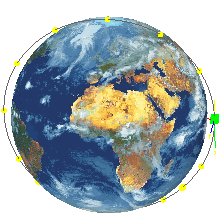

Activity: Orbital radiation analysis — NX Space Systems Thermal
|
 |

Nanosatellites have masses between 1 to 10 kg.
In this tutorial, you will estimate the temperatures on the simplified model of a nanosatellite.
Launch the Orbital radiation analysis — NX Space Systems Thermal activity.